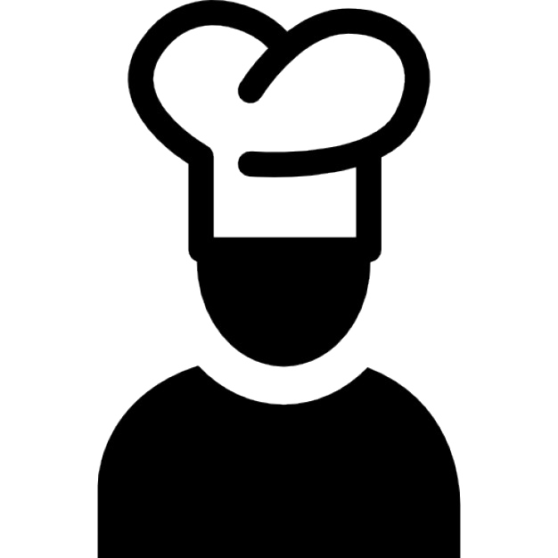

Então, respondendo a pergunta.
Sou natural de Nova Friburgo no estado do Rio de Janeiro. Atualmente tenho 21 anos.
Comecei os estudos na a Trybe em Fevereiro de 2023, no entanto, programação é algo que já me acompanha a um tempo, mas posso dizer que era aquela situação de amor e ódio.
Soft Skills
- Academia

- Coleção de Moedas

- Culinária 
- Fotografia
Esses são alguns dos Hobbies que curto e estão presentes nos meus dias.
Hard Skills
- Java Script
- Php
- SQL
- Fotografia
Esses são alguns dos Hobbies que curto e estão presentes nos meus dias.
Hobbies
- Academia
- Coleção de Moedas
- Culinária
- Fotografia
Esses são alguns dos Hobbies que curto e estão presentes nos meus dias.